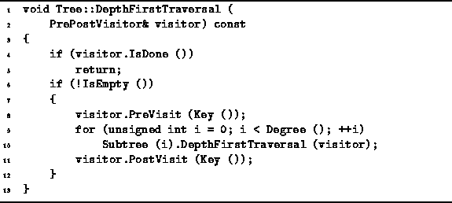
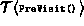
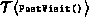

Data Structures and Algorithms
with Object-Oriented Design Patterns in C++
Data Structures and Algorithms
with Object-Oriented Design Patterns in C++
Program  gives the definition of
the DepthFirstTraversal member function
of the Tree class.
The traversal routine takes one argument--a reference to an instance of the PrePostVisitor class
defined in Program .
A PrePostVisitor is a visitor with two additional member functions,
PreVisit and PostVisit.
During a depth-first traversal each function is
called once for every node in the tree.
gives the definition of
the DepthFirstTraversal member function
of the Tree class.
The traversal routine takes one argument--a reference to an instance of the PrePostVisitor class
defined in Program .
A PrePostVisitor is a visitor with two additional member functions,
PreVisit and PostVisit.
During a depth-first traversal each function is
called once for every node in the tree.

Program: Tree Class Traversal Member Function Definitions
The depth-first traversal routine first calls the PreVisit function with the object in the root node. Then, it calls recursively the DepthFirstTraversal function for each subtree of the given node. After all the subtrees have been visited, the PostVisit function is called. Assuming that the IsEmpty, Key and Subtree member functions all run in constant time, the total running time of the DepthFirstTraversal routine is
where n is the number of nodes in the tree,  is the running time of PreVisit, and  is the running time of .
 Copyright © 1997 by Bruno R. Preiss, P.Eng. All rights reserved.
Copyright © 1997 by Bruno R. Preiss, P.Eng. All rights reserved.